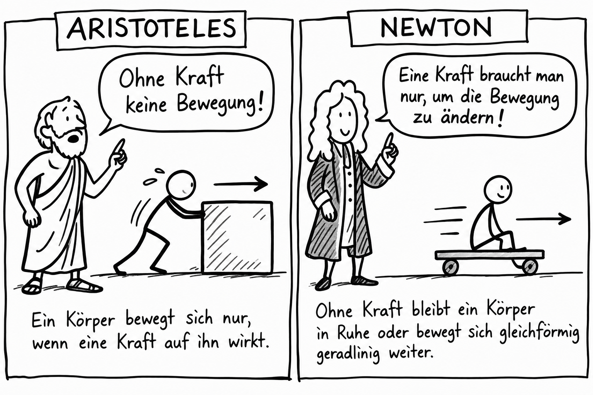

Station 1 · Weltbilder
Aristoteles und Newton
Zwei Antworten auf die Frage: Wozu braucht eine Bewegung eine Kraft?
Ein Wagen rollt über den Boden und bleibt irgendwann stehen. Früher lag die Erklärung nahe: Ohne weiteres Schieben hört die Bewegung auf. Was unterscheidet die Positionen der beiden Wissenschaftler?

Was dachte Aristoteles?
Aristoteles unterschied natürliche und erzwungene Bewegungen. Für eine erzwungene Bewegung, etwa das Schieben eines Kastens, nahm er einen fortdauernden Antrieb an. Der Satz in der Grafik ist eine kurze Zusammenfassung dieser Idee, kein wörtliches Zitat und keine Beschreibung aller Bewegungen bei Aristoteles.
Was änderte Newton?
Newton fragte nach der Änderung einer Bewegung. Ein Körper kann ohne resultierende Kraft in Ruhe bleiben oder sich geradeaus mit gleichbleibender Geschwindigkeit bewegen. Eine Kraft wird gebraucht, wenn er schneller oder langsamer wird oder seine Richtung ändert.
Warum stoppt ein Wagen auf dem Boden trotzdem? Weil Reibung und Luftwiderstand auf ihn wirken. Diese Kräfte bremsen ihn ab.
Fachlicher Hintergrund: NASA: Newton’s Laws of Motion.